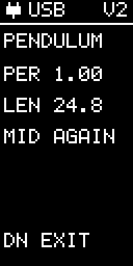
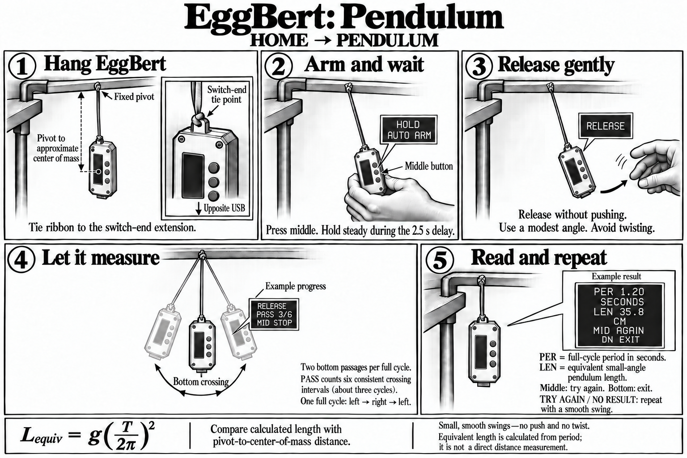

Pendulum
Current controls
- Set up the pendulum as shown below and hold it at the starting angle.
- Press middle to arm, hold during AUTO ARM, then release when RELEASE appears.
- Wait for the estimate from four measured periods. PER is in seconds; LEN is inferred pendulum length in centimeters.
Middle: arm, stop or try again. Bottom: exit from the result. Top: return HOME while idle or waiting to arm.
This activity uses low-g acceleration on both versions.

The experiment illustration below shows an earlier screen arrangement. Follow the current controls above.
